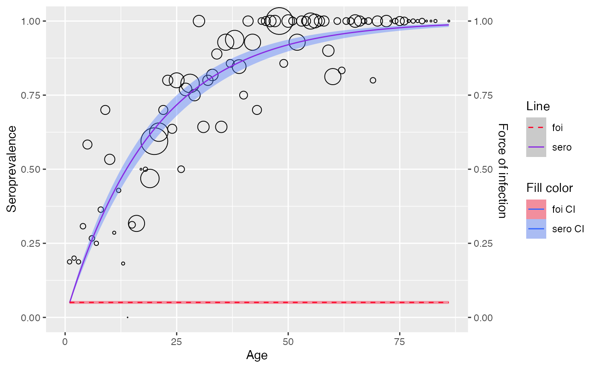
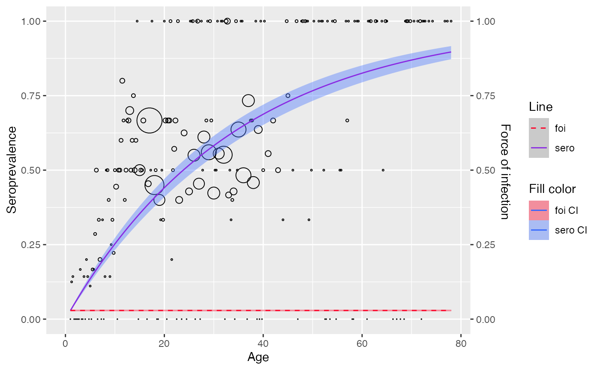

Input data format
All *_model() functions in serosv require
data argument as the input data to be fitted.
The package can handle both linelisting and aggregated data, and it infers the format from the structure of the input data frame. This means that input data is expected to follow a specific format.
For linelisting data: data must have 3 columns as follows
the age vector (column name specified via
age_colparameter)the vector of counts of sero positives of that age group (column name specified via
pos_colparameter)the vector is the total population of that age group (column name specified via
tot_colparameter)
For aggregated data: data must have 2 columns as follows
the age vector of individuals
is the vector indicating the serostatus of that individual (column name specified via
status_colparameter)
Example: Fitting linelisting and aggregated data
using polynomial_model()
linelisting <- parvob19_fi_1997_1998[order(parvob19_fi_1997_1998$age), ]
aggregated <- hav_bg_1964
# View the 2 different data format
head(linelisting)
#> age seropositive year gender parvouml
#> 1 1 0 2001 m 8
#> 2 1 0 2001 m 7
#> 3 1 0 2001 m 6
#> 406 1 0 2001 f 11
#> 407 1 0 2001 f 7
#> 408 1 0 2001 f 5
head(aggregated)
#> age pos tot
#> 1 1 3 16
#> 2 2 3 15
#> 3 3 3 16
#> 4 4 4 13
#> 5 5 7 12
#> 6 6 4 15
# fit with aggregated data
model1 <- polynomial_model(aggregated, k=1)
plot(model1)
# fit with linelisting data
model2 <- polynomial_model(linelisting, k=1, status_col = "seropositive")
plot(model2)Data transformation
serosv also offers function
transform_data() to convert from linelisting to aggregated
data. For more information, refer to Data transformation
transform_data(
linelisting$age,
linelisting$seropositive,
stratum_col = "age") %>%
polynomial_model(k=1) %>%
plot()